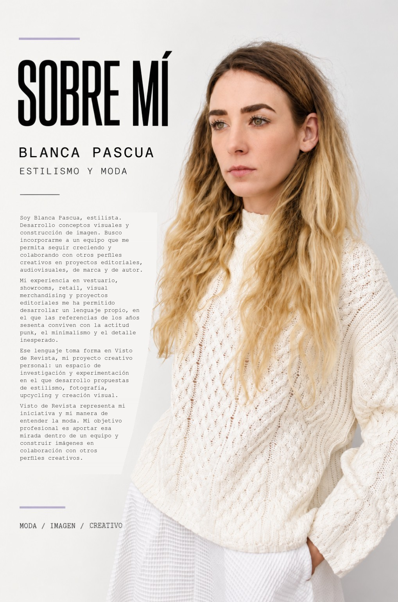
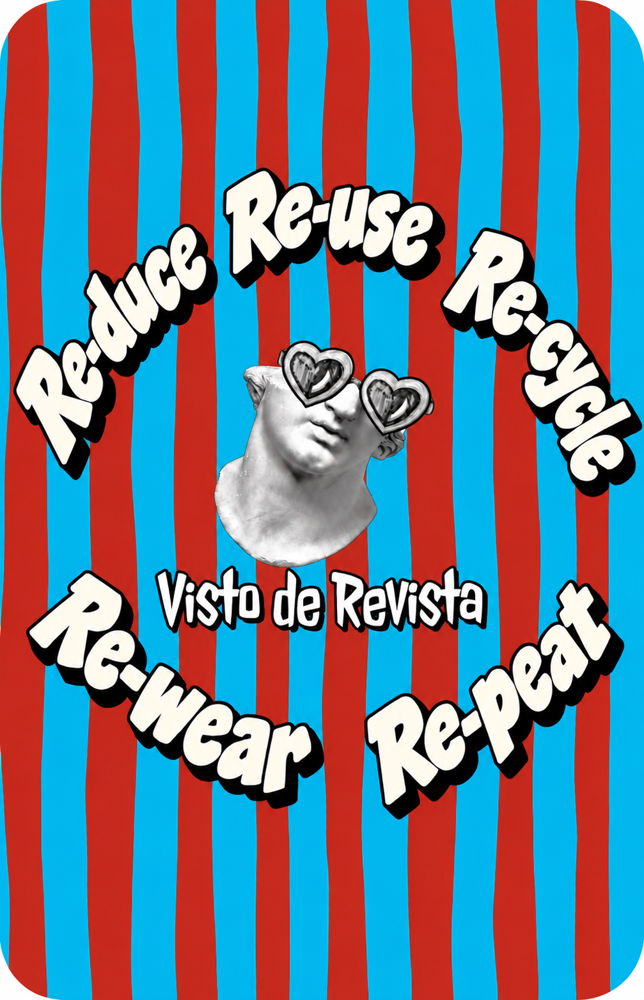

SOBRE MÍ
Soy Blanca Pascua, estilista. Desarrollo conceptos visuales y construcción de imagen. Busco incorporarme a un equipo que me permita seguir creciendo y colaborando con otros perfiles creativos en proyectos editoriales, audiovisuales, de marca y de autor.
Mi experiencia en vestuario, showrooms, retail, visual merchandising y proyectos editoriales me ha permitido desarrollar un lenguaje propio, en el que las referencias de los años sesenta conviven con la actitud punk, el minimalismo y el detalle inesperado.
Ese lenguaje toma forma en Visto de Revista, mi proyecto creativo personal: un espacio de investigación y experimentación en el que desarrollo propuestas de estilismo, fotografía, upcycling y creación visual.
Visto de Revista representa mi iniciativa y mi manera de entender la moda. Mi objetivo profesional es aportar esa mirada dentro de un equipo y construir imágenes en colaboración con otros perfiles creativos.
PULSA EL TEXTO O LA FOTOGRAFÍA PARA AMPLIAR
VISTO DE REVISTA
Estudio creativo de moda, imagen y experiencias.
Visto de Revista nace como un proyecto personal de investigación y experimentación visual, donde la moda se convierte en un medio de expresión y construcción de identidad.
Su universo creativo se nutre de referencias culturales, artísticas y musicales, con una especial influencia de la estética de los años sesenta, la contracultura y la actitud punk. Un lenguaje propio en el que conviven lo vintage, la experimentación, el minimalismo y el detalle inesperado.
El proyecto abarca diferentes disciplinas: estilismo, dirección creativa, fotografía, transformación de prendas, diseño de estampados, upcycling y desarrollo de conceptos visuales. Cada propuesta parte de una idea que evoluciona a través de la investigación, la selección de materiales y la construcción de una imagen con identidad propia.
Visto de Revista reivindica la creatividad independiente, la autenticidad y una forma más consciente de entender la moda. Apuesta por la reutilización, el valor de lo artesanal y la capacidad de transformar lo existente en nuevas posibilidades estéticas.
Más que una colección de trabajos, es un espacio de creación en constante evolución, abierto a nuevas ideas, disciplinas y colaboraciones.
PULSA LA IMAGEN O EL TEXTO PARA AMPLIAR
PROPÓSITO Y VALORES
A veces, lo que falta no es otra idea, sino saber ver lo que ya tenemos delante.
Mi trabajo empieza ahí. Analizar una identidad, reconocer su potencial y construir una imagen con criterio propio. A través del estilismo, la fotografía y la creación visual, doy forma a las ideas y busco los medios para llevarlas a cabo.
Entiendo la moda como un lenguaje de expresión e identidad, donde los materiales, las formas, el color y las referencias culturales permiten construir nuevas narrativas.
Defiendo una manera de crear basada en la autenticidad, la experimentación y el aprovechamiento de los recursos existentes. Reinterpretar, transformar y dar una segunda vida a las prendas forma parte de mi manera de entender el proceso creativo.
Creo en el valor de lo hecho con intención, en la libertad de expresión y en una moda más consciente, donde la creatividad no dependa necesariamente de producir algo nuevo.
PULSA EL TEXTO PARA AMPLIAR
